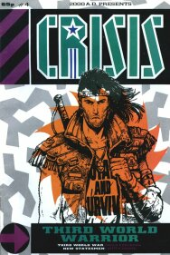
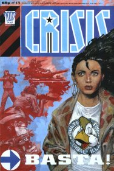

|  |  | |
| Crisis #1 by Carlos Ezquerra | Crisis #4 by Carlos Ezquerra | Crisis #13 by Glenn Fabry |
Crisis was launched as a "2000 AD presents" fortnightly sister title that was partly the result of a desire to break into the US market, and partly an attempt to open up the UK comic scene (to more closely resemble that found in mainland Europe). It was aimed at a more mature audience and wore its political themes proudly.
Whereas 2000 AD was thirty-six pages (at the time) and running six stories, Crisis launched with only two strips over its thirty-two pages. The design aesthetic was strong and deliberate, with a unifying camo pattern and the first twelve covers all by Carlos Ezquerra.
Third World War
In a near future, the Multi-Foods corporation have staged a military intervention in a Central American country: there to re-impose economic and political control on an unwilling populace. We witness this mainly through protagonist Eve, a young black woman from the UK who's been drafted into the military organization Freeaid. She is grouped with four other key characters, her squad mates: Paul (later to become Finn), Trisha, Garry and Ivan.
The premise is fascinating and highly politically charged, bursting to the seams with research from writer Pat Mills, sometimes to the extent that it becomes bogged down in polemic to the detriment of the story-telling. Still, it remains highly relevant, and could easily have been written as a contemporary piece.
Continues into the next phase but brings the characters home from central america to the UK...
New Statesmen
Clearly inspired by Watchmen (which precedes this by just a year or so), this has leading text pieces (presented as magazine articles) providing support for the comic's narrative. Also, it tries to be a realistic take on the idea of superhumans, with an often bleak view of humanity.
The central conceit is that each of the US States is represented by a manufactured superhero, although they're different ages as they've been introduced in batches. They serve as a sort of US royal family, but they've been used as muscle in globe-trotting US police actions, and exist in a society riven by weaponized domestic politics around issues such as religion and gay rights.
Again, this could easily be a contemporary piece, and probably holds up as the more accomplished of the two stories, even while it's arguably also the least accessible.
Effectively the end of the tale, but we get a one-off prologue in issue #28...